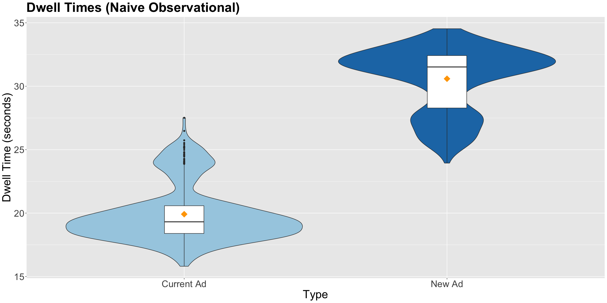
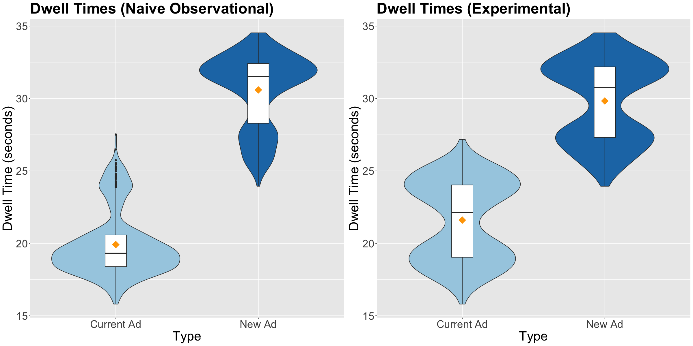

Understanding confounders is critical when analyzing randomized versus non-randomized studies. In A/B testing or RCTs, we aim to minimize bias caused by confounders, which are variables that influence both the predictor and outcome, leading to distorted results.
A confounder must meet two conditions:
It relates to the outcome of interest.
Its distribution varies across groups being compared.
Case Study
A TikTok ad experiment involves comparing engagement between a New Ad and the Current Ad by measuring ad dwell time. Assume the customer population is split across two cities: Vancouver and Victoria. Older customers and those in Victoria have naturally higher dwell times. Here, the variables age and city act as confounders.
The response variable is ad dwell time and the regressor is the ad type. The challenge is controlling for the confounders to properly estimate the effect of the new ad.
Key Concepts: - Observational Studies: When customers choose which ad they want to see, biases arise, making it difficult to determine causal relationships. - Experimentation Studies: Through random assignment (Randomization), each customer has an equal chance of seeing either ad, reducing confounding and allowing for a causal interpretation.
Simulating a Synthetic Population
We’ll generate a population of 1,000,000 customers, evenly split between Vancouver and Victoria. Ages are uniformly distributed between 16 and 24.
library(tidyverse)
Warning: package 'ggplot2' was built under R version 4.3.2
── Attaching core tidyverse packages ──────────────────────── tidyverse 2.0.0 ──
✔ dplyr 1.1.3 ✔ readr 2.1.4
✔ forcats 1.0.0 ✔ stringr 1.5.0
✔ ggplot2 3.4.4 ✔ tibble 3.2.1
✔ lubridate 1.9.3 ✔ tidyr 1.3.0
✔ purrr 1.0.2
── Conflicts ────────────────────────────────────────── tidyverse_conflicts() ──
✖ dplyr::filter() masks stats::filter()
✖ dplyr::lag() masks stats::lag()
ℹ Use the conflicted package (<http://conflicted.r-lib.org/>) to force all conflicts to become errors
# Synthesizing sample populationpop.size <-1000000pop.pool <-tibble(city =sample(c(rep("Vancouver", pop.size/2), rep("Victoria", pop.size/2))),age =runif(pop.size, 16,24) # Random number generator form uniform distribution)
The dwell times for each customer are calculated based on city and age. Victoria customers naturally have 5 more seconds dwell time, and for every additional year of age, dwell time increases by 0.2 seconds.
Current Ad: Baseline dwell time is 15 seconds, with adjustments for city and age.
New Ad: Adds 8 seconds to the dwell time across all customers.
set.seed(554) # Reproducibilitypop.pool$y_current_ad <-rnorm(pop.size, mean = mean_current_ad, sd =1)pop.pool$y_new_ad <-rnorm(pop.size, mean = mean_new_ad, sd =1)
Once we have these vectors of means, we can simulate the corresponding responses y_current_ad and y_new_ad and incorporate them in pop.pool as two new columns. These responses will be normally distributed (i.e., rnorm()) with means mean_current_ad and mean_new_ad and fixed standard deviations of 1 second.
Study 1: Naive Observational Approach
In this observational study, customers choose which ad to watch. The probability of selecting the New Ad increases for Victoria customers but decreases slightly with age.
The violin plot below shows that customers who choose the New Ad tend to have higher dwell times. However, this difference might be due to confounding by age and city. 
Regression Model
Using an OLS model, we estimate that effect of switching to the new ad as below:
Note the estimated effect in dwell time, when switching from the current to the new ad, increases by 10.68 seconds and is statistically significant. The effect is clearly overestimated in this analysis, even when computing the 95% CI!
Study 2: Less Naive Observational Study
By controlling for city and age (causal covariates confounders), we improve the accuracy of our estimates. The dwell time increase due to the New Ad is now estimated at 8.03 seconds, which is much closer to the true effect.
OLS_obs_study_TikTok <-lm(y_obs ~ x_self_choice + city + age, data = sample_TikTok)OLS_obs_study_TikTok <-tidy(OLS_obs_study_TikTok, conf.int =TRUE) %>%mutate_if(is.numeric, round, 2)OLS_obs_study_TikTok
The result of the regression model taking into account of city and age
Study 3: Randomized Study
In the randomized study, customers are randomly assigned to view either the current or the new ad. This eliminates the effect of confounders and allows for an unbiased estimate of the ad’s impact on dwell time.
Before fitting the corresponding regression, let us compare the side-by-side boxplots of the naive observational study versus the experimental study. The violin plot below shows taht the treatment means are closer in the experimental study, and treatment data spread is graphically quite similar. 
The result of the regression model for the randomizaton experimentation.
Note the estimated experimental effect in dwell time, when switching from the current to the new ad, increases by 8.22 seconds and is statistically significant. According to the output above, we obtain more accurate estimations with a randomized study than a naive observational one.
When taken into account of the city and age variable, the estimated effect from this randomized design is exactly 8 seconds, confirming the true effect of the new ad on dwell time.
Conclusion
Randomization effectively eliminates confounding, allowing us to accurately estimate the causal effect of the New Ad. This case study demonstrates the importance of detecting and controlling for confounders in A/B testing and highlights the gold standard of randomized experiments in measuring causal effects.